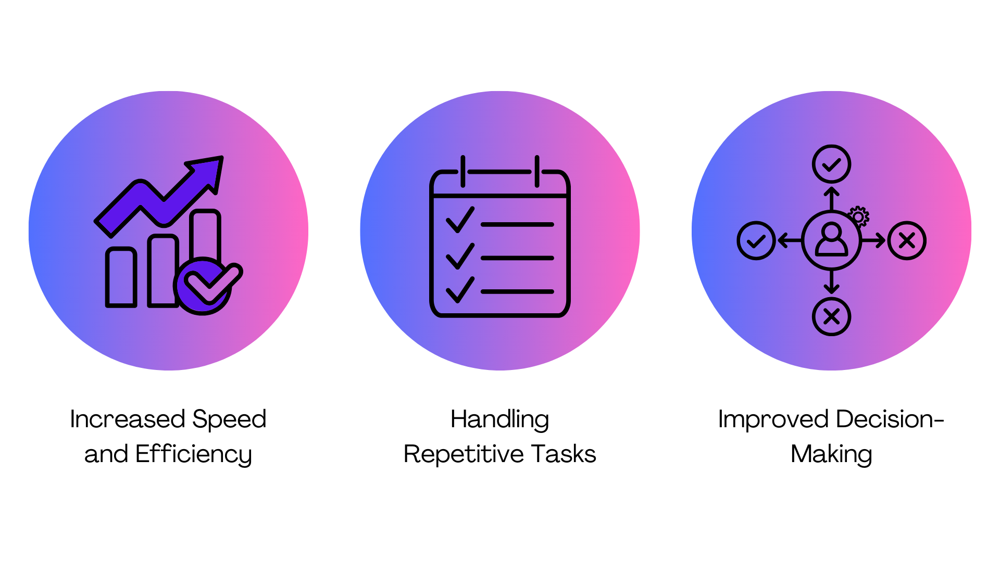

AI Automation Initiative (Lockheed Martin)
Led AI-driven automation initiatives to streamline business operations by identifying repetitive, time-consuming processes and developing prototypes to automate data entry, report generation, and document classification. These solutions significantly reduced processing times and manual workloads while aligning with corporate security and compliance standards, laying the foundation for scalable enterprise-wide adoption.
Skills Learned
- Project leadership and stakeholder discovery
- Process mapping and workflow optimization
- Automation/Python scripting and AI prototyping
- Change management and documentation
- Team collaboration and cross-functional communication
- Agile and iterative project management
- Requirements gathering and technical writing
- Problem-solving and troubleshooting